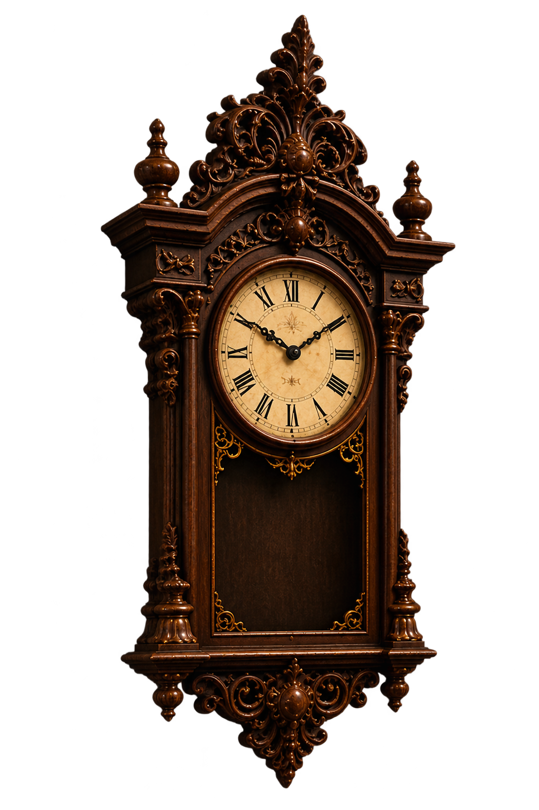
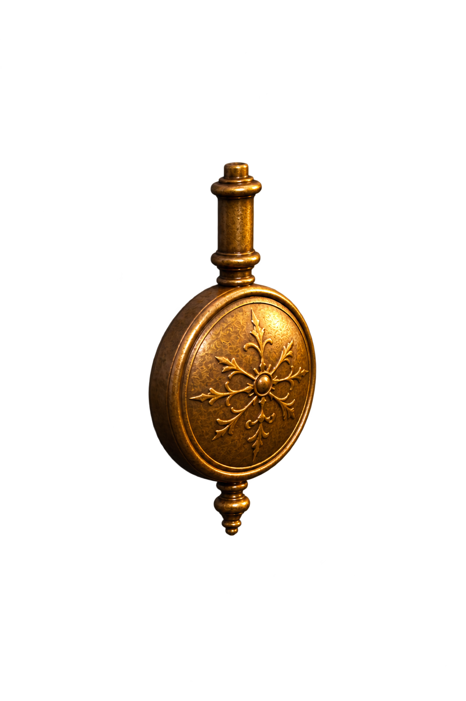
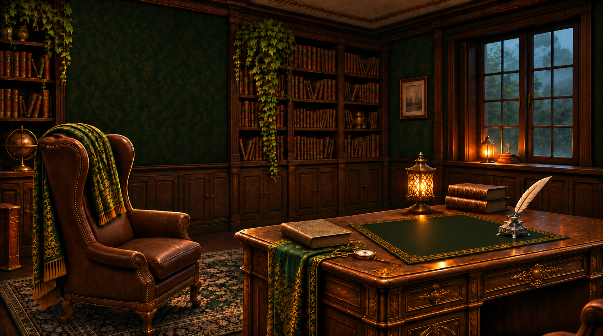

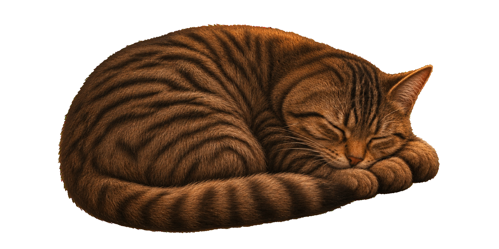

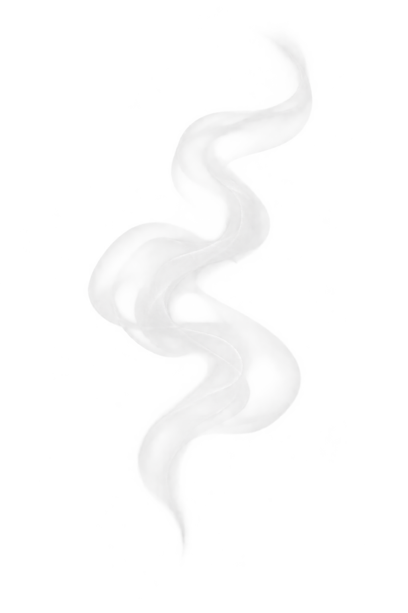
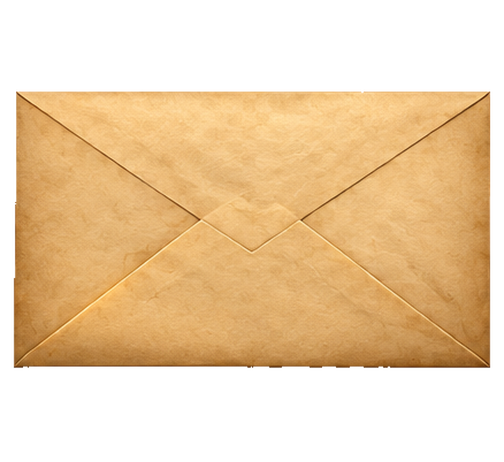
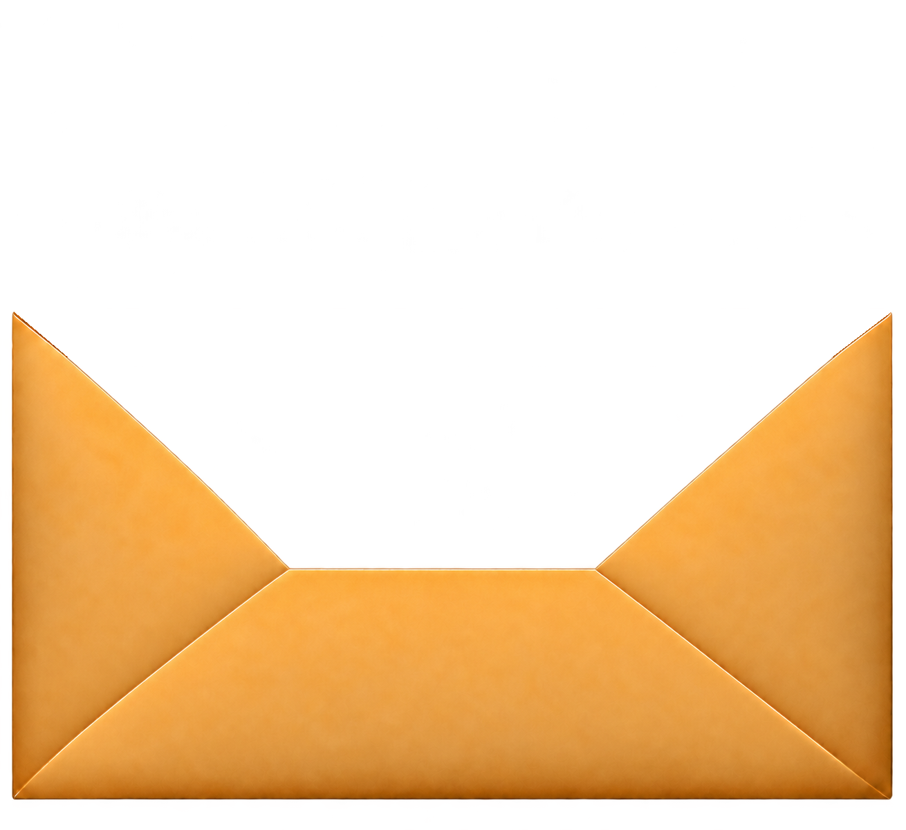
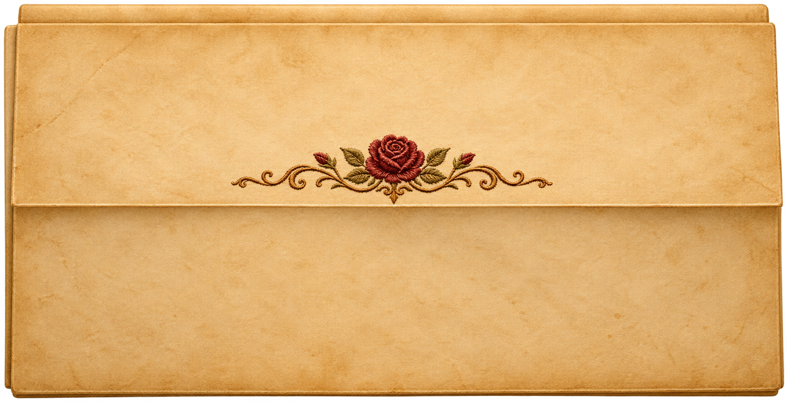
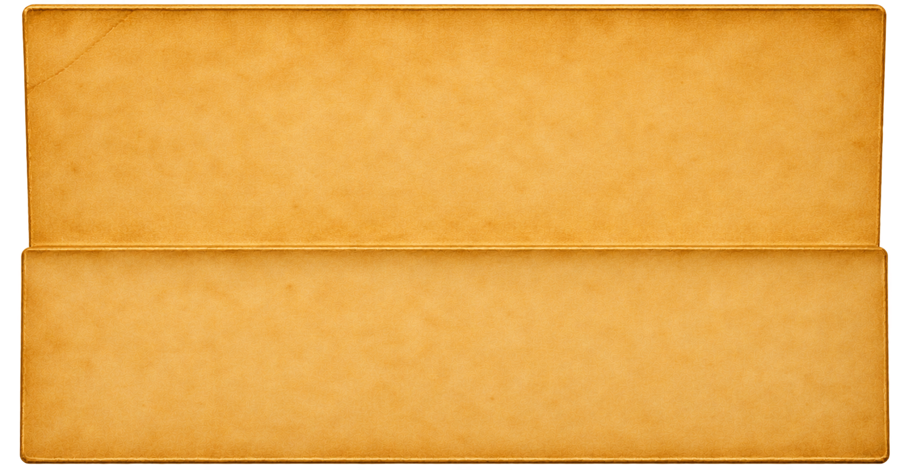
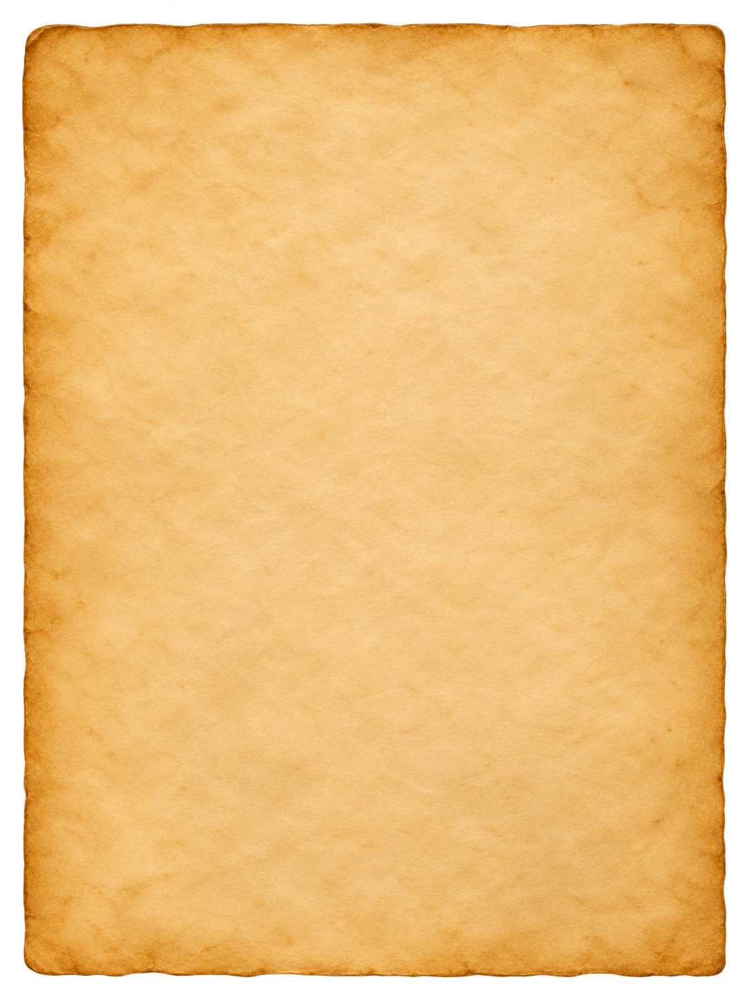
Ohh... Ma'am, where do I even start the letter, and how on earth will I be able to end this letter? There are a lot of unsaid words, stories, and areas we both had to explore. So where do I even begin? Writing letters is my way of saying how much each person meant to me.
Well, if our sessions were in person, I would have given you the letter in person and a more customized one, but here we both were online, and I couldn't get much of who you are and what you love most. But I wanted to give you the same stuff, so I made the whole thing, and I hope you have seen what I have built for you. Before you read this...
Yes, ma'am, for every person, therapists are a big part of life. But ma'am, for someone like me, who didn't have a single soul to speak to or gain comfort from, therapists are more than just that. And you, on the other hand, you were my home, ma'am. You were more than just a safe place. You were my home...
I just wish we had more time, ma'am. I wish, if at all, I had come to Bangalore just one month or a few weeks eralier, or if I had started therapy a few months before, we would have had more time, ma'am. Maybe just to share a few more stories or laugh about a few more jokes. And yes, ma'am, leaving you and writing this letter...is hard for me. And you saw how hard it indeed is. And tears have already blurred my vision...
But on the other hand, you are going for something great and beautiful. Most people who have suffered like me tend to hate seeing good things happen to others. But I'm not that type. I'm a person who gets most of his happiness from seeing the people around me happy. Especially my loved ones, and yes, of course, you are one of the very few people in that, ma'am.
And just like everyone else, you are also leaving. Even though you are leaving, you are going for something good and beautiful. And you have no idea how happy
I am for you. And the important fact. In the short period of 3–4 months that I have known you, I have seen how kind you are and what a beautiful soul you have, ma'am.
And it's not because you were my therapist. I can see and understand ma'am, that as a person, you are a very kind-hearted soul.
And I'm so so soo much happy for the baby, as I'm a hundred percent sure that the baby is going to be born to a beautiful mom. As a person who has had a terrible family, I can give you my assurance that you will be a great mother, and you are already halfway through being a mom. In my perspective, you shouldn't even think of worrying about that part. And again, I'm so so soo much happy for you, ma'am.
Even though I lost my belief in God, I know He is still there, and I do pray for the people around me, ma'am. And I have already included you and your new upcoming family in those prayers.
If therapy was my home, I have two rooms in it. One where I choose to stay a lot, and the other, the one where I can come anytime, where I know I won't be judged or forced to do anything, where I could come and complain about how much I miss the other person in the other room.
Unfortunately, this room is about to close. And a new door is visible to me. Hope the new one is as kind as the others...
And thanks a lot for giving me another perspective on letting go. Thanks a lot for genuinely caring for me. Most people don't, ma'am. Thanks a lot for everything you have done. I will miss you, ma'am.
I will miss the message saying your next session for Shaima Nasrin is booked. I will miss the way you consoled me every time. I will miss seeing you every Tuesday...
Even though my eyes are filled with tears writing this letter, my heart is filled with happiness for the process you are going through.
Take care, ma'am. Look after your health. Love you, ma'am. Love you a lot...
Good Bye ma’am…
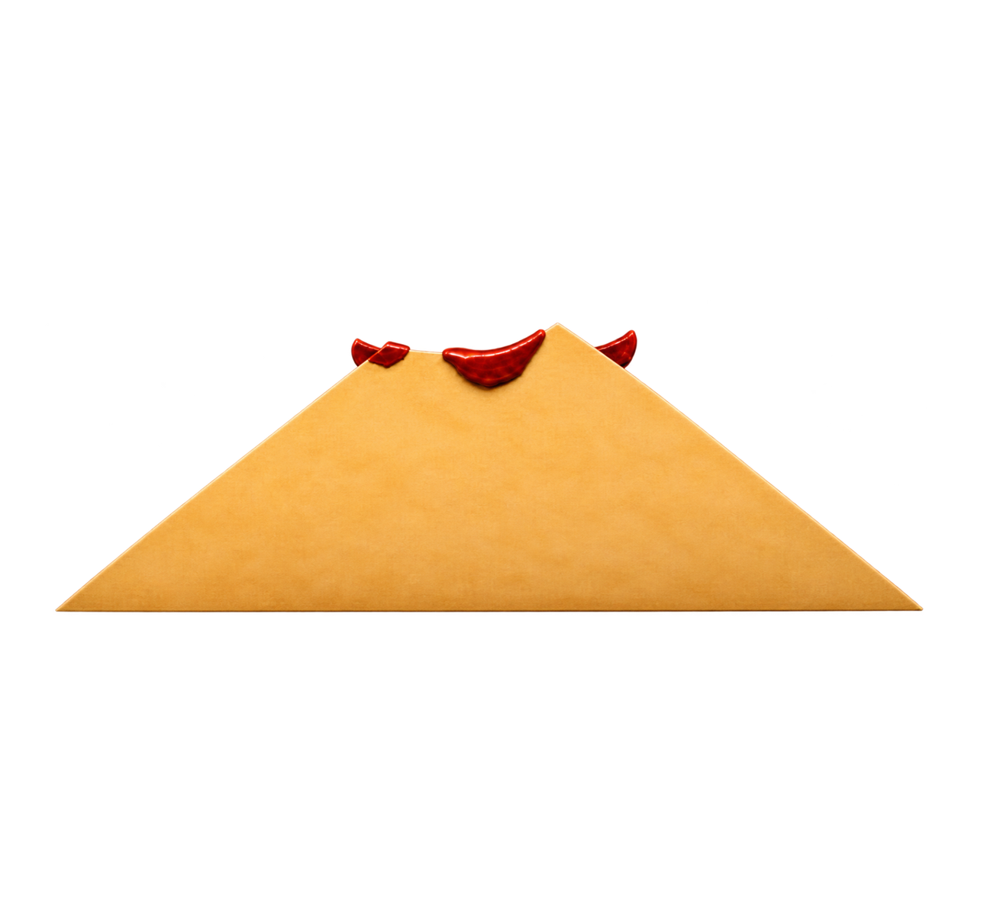
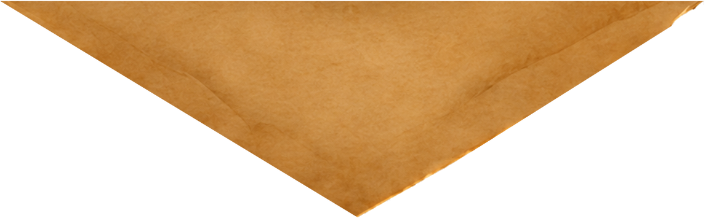